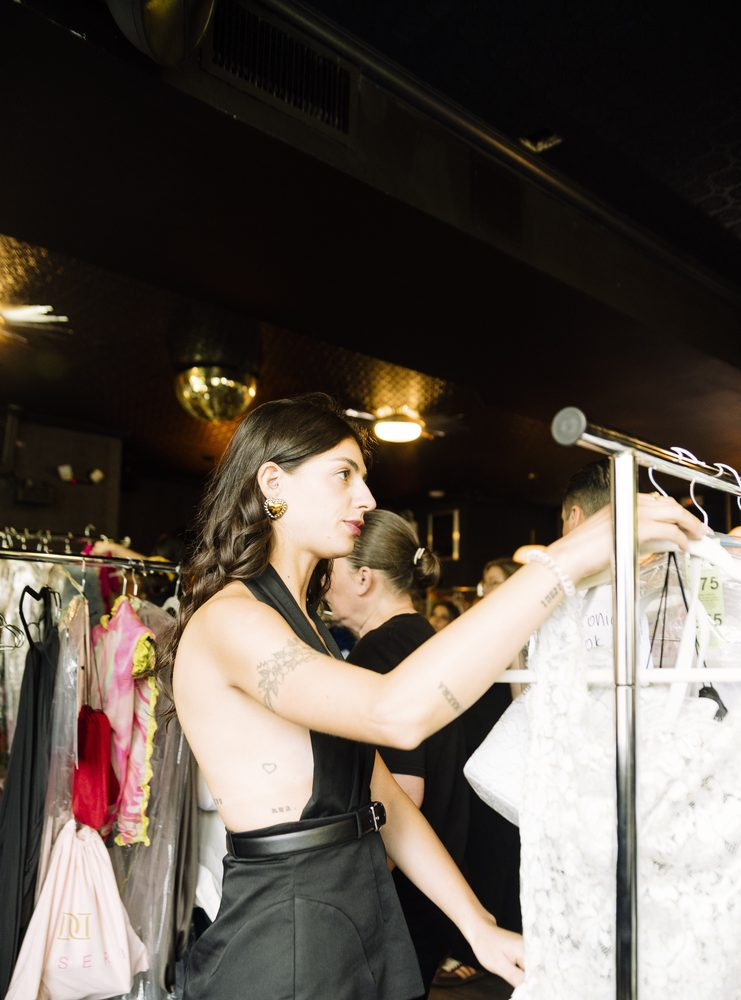
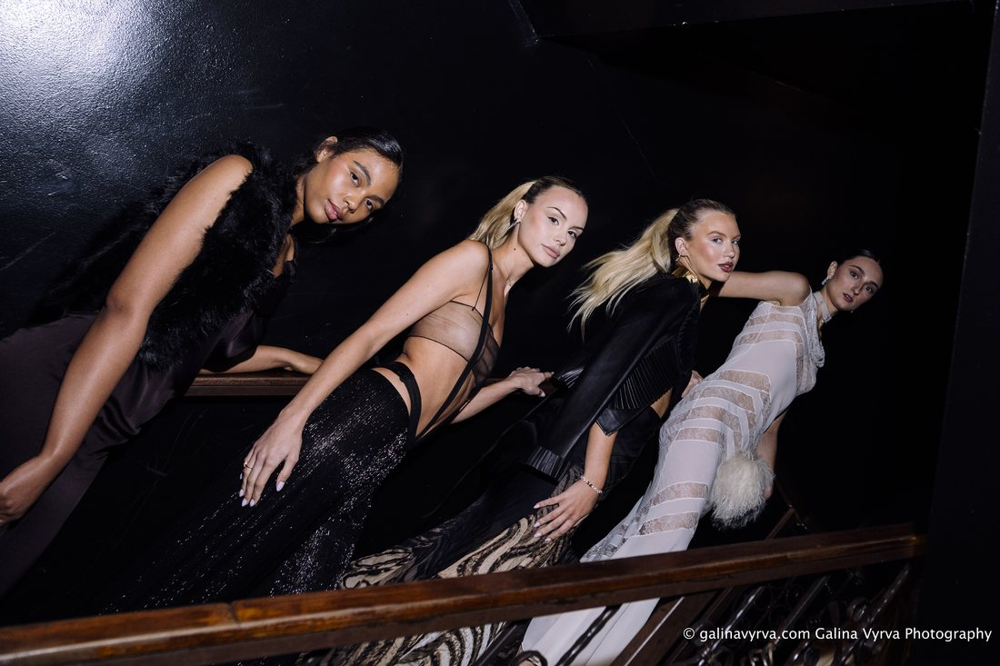
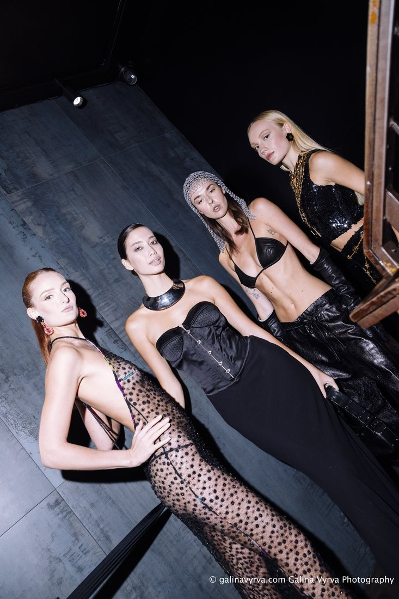
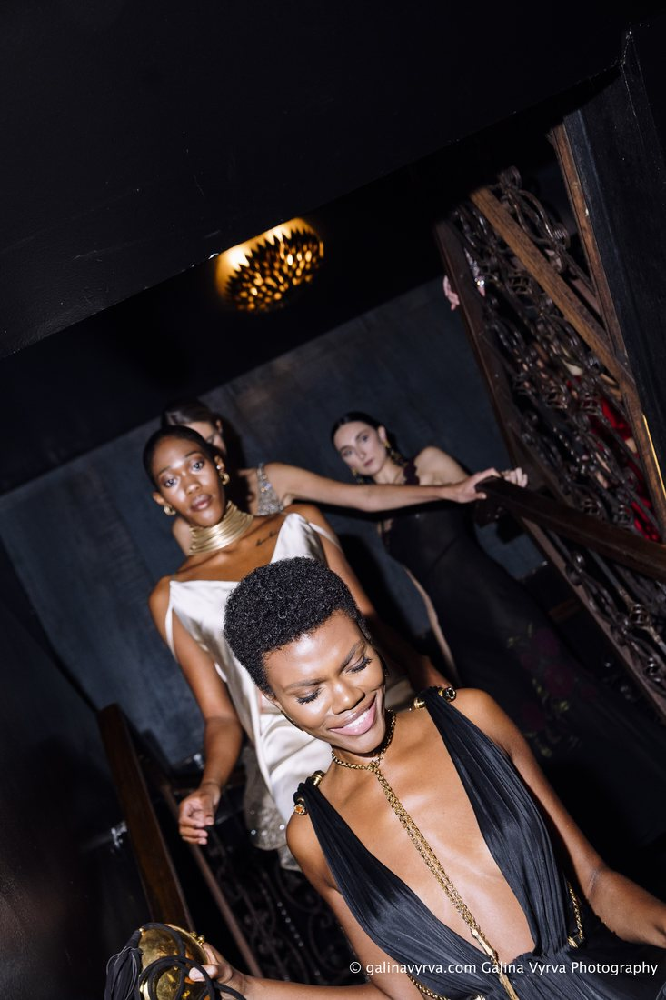

About CF&D
A refined fashion gathering for Charleston
Charleston Fashion & Design 2026 brings a curated luxury fashion presentation to Charleston with a polished runway show, followed the next morning by an invitation-only Charleston Fashion Brunch.

About the Organizer
Rooted in Charleston,
built with intention
Charleston Fashion & Design was created to bring a fresh, elevated cultural moment to Charleston — one that reflects the city’s design sensibility, hospitality, and creative energy.
The project is built around polished presentation, strong partnerships, and a clear sense of place: gracious, modern, and unmistakably local while reaching a wider national audience.
Mission
Elevating Charleston
on a national stage
The event exists to present Charleston’s own fashion and design community alongside a nationally recognized curator — polished, and unmistakably local.


Curator
Janet Mandell
Curated by Janet Mandell, whose work spans luxury fashion curation, styling, and thoughtful brand development. Her eponymous showroom — New York, Chicago, Los Angeles — dresses celebrities, stylists, and private clients.
Memberships
Fashion Group International, and the CFDA’s Friends of CFDA.
Why Charleston
A city with an appetite
for refined programming
Charleston’s heritage, hospitality, and design culture make it a fitting home for an event that blends modern fashion with a deeply local sense of place.
The city is an elegant Southern counterpart to New York and Miami — affluent, culturally engaged, and not oversaturated with fashion events.
